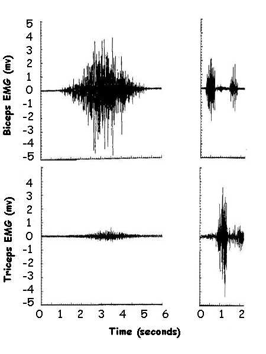
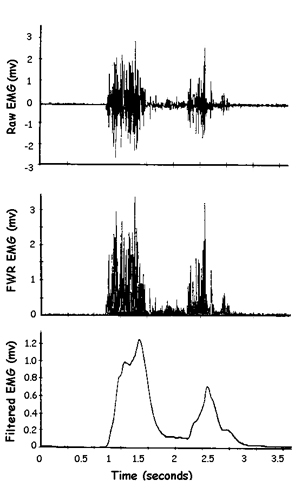
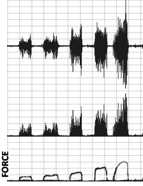
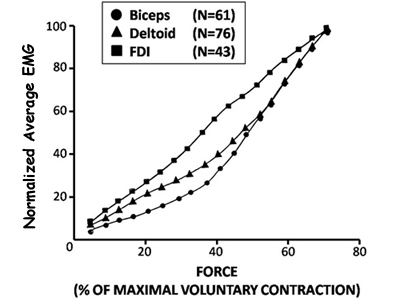
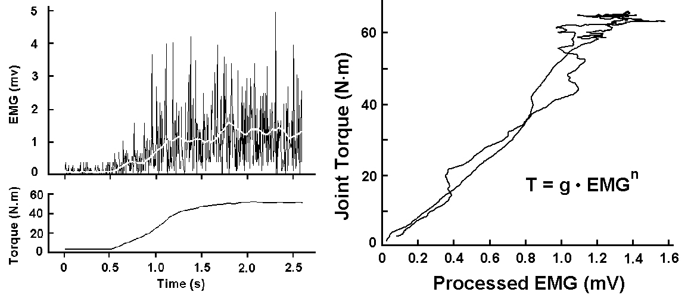

Electromyography (continued)
Phasic Activity:

The recorded EMG from a whole muscle is a complex interaction of many MUAPs. The amplitude of this noisy signal increases as the muscle becomes active and remains quiet when the muscle is relaxed.
Diagram (A) on the right shows recordings from the biceps and triceps during a slow isometric elbow flexion. The flexor muscle (Biceps) becomes very active while the extensor (Triceps) remains quiet. There is a small amount of activity in the triceps which could be a small antagonistic co-contraction or it could also be crosstalk from the Biceps.
Diagram (B) on the right shows a rapid elbow flexion-extension movement in which there are two bursts of activity in the flexor and a single burst in the extensor. Notice that in a coordinated movement, the antagonist muscle is quiet when the agonist is active.
Kinesiologists use EMG to identify which muscles are involved in different movements and how the timing of the activations relate to skilled movements. When two antagonistic muscles are active at the same time, it is called a "Co-contraction" and is often seen with stroke patients and others with neuromuscular disorders.
EMG to Activation:

Quite often, the kinesiologist not only needs to know when a muscle is active, but how active it is.
The diagram to the right shows the raw EMG (top) of an isometrically contracting muscle. There is a large burst of activity followed by a smaller burst. We might think that the first burst is larger than the second but how do we measure how much more active it is?
The amount of activity is estimated by a process that involves the Full Wave Rectification of the raw signal . This process take the absolute value of each data point (middle diagram). This step is necessary because a simple average of the bursts would yield a value of zero because each action potential has an average value of zero due to the depolarization and repolarization of each fiber.
Once the signal has been full wave rectified, we smooth the signal with a lowpass filter that mimics the process of converting action potentials to twitches of muscle force (bottom diagram).
The resulting signal shows that the first burst is indeed larger than the second. Researchers have found that this process yields a signal that closely resembles the active state of the muscle and also the amount of force that the muscle exerts under isometric, non-fatigued conditions.

Calibration:
The smooth rectified EMG can be calibrated to isometric muscle force by having a subject perform isometric contractions between zero and their Maximum Voluntary Contraction (MVC), plotting the values for the EMG vs the force values and calculating a line of best fit (see below).

The relationship is often linear and can be described by a straight line of best fit but sometimes a nonlinear best fitting line is required. The figure on the right shows the EMG to force relationship for three muscles. It can be seen that the First Dorsal Interoseous muscle (FDI) has a more linear relationship than Deltoid or Biceps.
Since the relationship is muscle and subject specific, investigtors often perform a simple calibration trial in which the subject gradually increases and decreases their effort while the force and EMG is monitored. The figure below shows a typical result of such a ramp isometric contraction. The smoothed, rectified EMG is plotted against the force and a best fitting equation is fitted to the data. Notice that the relationship is fairly smooth and nearly linear. Also notice that when the muscle reaches high levels of activation, the EMG is a lot more variable than the force. For this reason, it is not advised to use an MVC to calibrate EMG to force.
